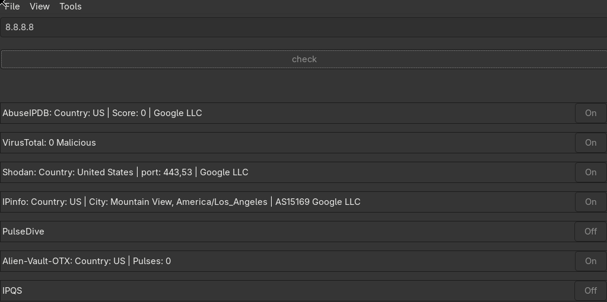
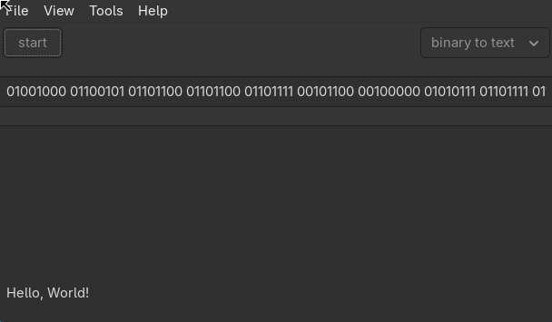
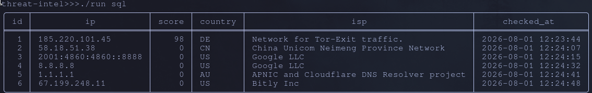
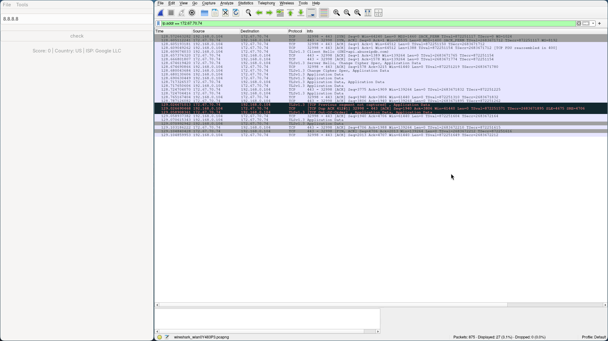
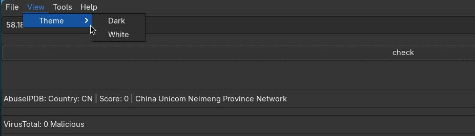

Що таке Threat Intel
Threat Intel — це десктопний GTK3-застосунок, який перевіряє репутацію IP-адреси одразу через 7 threat intelligence сервісів і показує зведений результат в одному вікні, замість того щоб відкривати кожен сервіс окремо в браузері.
Навіщо створено
Під час аналізу мережевого трафіку у Wireshark доводилось одночасно тримати відкритими AbuseIPDB, Shodan, VirusTotal і ще 4 вкладки — вручну зіставляючи результати для кожної підозрілої IP-адреси.
Цей проєкт об'єднує всі джерела в один пошук. Кешування в SQLite означає, що повторні IP не витрачають ліміти API-запитів.
Технологічний стек
- Перевірка репутації IP через 7 API одночасно (багатопоточність)
- Кешування результатів у SQLite (без дублювання запитів)
- Інструмент кодування/декодування (hex, base64, binary, rot13)
- Темна/світла тема зі збереженням налаштувань
- Перемикач для кожного API окремо (увімкнути/вимкнути)
- Підтримка Docker (в т.ч. через XWayland)
1. Початок роботи
1.1. Залежності
Перед збіркою встанови системні бібліотеки, потрібні застосунку.
Arch Linux
sudo pacman -S gtk3 curl cjson sqlite cmake pkgconfUbuntu/Debian
sudo apt install libgtk-3-dev libcurl4-openssl-dev libcjson-dev libsqlite3-dev cmake pkg-config1.2. Отримання API ключів
Застосунок сам по собі нічого не перевірить без ключів — кожне джерело потребує окремої безкоштовної реєстрації. Зареєструйся на кожному сервісі нижче та отримай персональний API ключ.
| Сервіс | Реєстрація | Що дає |
|---|---|---|
| AbuseIPDB | abuseipdb.com | Скор зловживань, кількість репортів |
| VirusTotal | virustotal.com | Детекції антивірусних движків |
| Shodan | shodan.io | Відкриті порти, банери сервісів |
| IPinfo | ipinfo.io | Геолокація, ASN, провайдер |
| PulseDive | pulsedive.com | Ризик-скор, пов'язані індикатори |
| AlienVault OTX | otx.alienvault.com | Pulse-звіти від спільноти |
| IPQS | ipqualityscore.com | Fraud score, VPN/proxy детекція |
1.3. Збірка та запуск
git clone https://github.com/yorjjeartemitt/threat-intel.git
cd threat-intel
cp .env.example .env # встав сюди свої ключі з 1.2
mkdir -p build
./run gcc # збірка через gcc та запуск
./run cmake # збірка через cmake та запуск
./run docker # запуск у docker
./run sql # перегляд збереженої бази (розділ 4.2)
./run docker_x11 # запуск через xwayland — також підходить для windows/macOS2. Перевірка IP-адрес
2.1. Як зробити перевірку
- 1Відкрий головну вкладку застосунку (IP Checker).
- 2Введи IP-адресу в поле пошуку (наприклад
8.8.8.8). - 3Натисни кнопку перевірки — застосунок одночасно (в окремих потоках) відправить запити до всіх увімкнених джерел.
- 4Зачекай, поки всі джерела відповідять — результати з'являються по мірі надходження, не потрібно чекати найповільніше API, щоб побачити перші дані.
2.2. Вибір джерел (toggle)
Кожне з 7 джерел має свій перемикач увімкнено/вимкнено. Вимкнені джерела повністю пропускаються — запит до них не відправляється, це економить ліміти API.
2.3. Читання результатів
Результати групуються по джерелу. Для кожної IP-адреси зазвичай важливо звернути увагу на:
- скор зловживань / ризику (AbuseIPDB, PulseDive, IPQS)
- кількість детекцій антивірусів (VirusTotal)
- відкриті порти й банери (Shodan)
- географію та власника ASN (IPinfo)
- ознаки VPN/proxy (IPQS)
2.4. Кешування в SQLite
Кожен результат перевірки зберігається локально в SQLite. Якщо ти повторно перевіряєш ту саму IP-адресу, застосунок бере дані з кешу замість нового запиту до API — це економить ліміти запитів і працює миттєво, навіть без інтернету.
Переглянути всю збережену базу можна через ./run sql (детальніше у розділі 4.2).
3. Decode / Encode
Окремий інструмент у застосунку для швидкого кодування та декодування рядків без переходу у зовнішні онлайн-сервіси. Корисно, коли в трафіку або логах трапляється закодований payload.
3.1. Як користуватись
- 1Перейди на вкладку Decode/Encode.
- 2Встав або введи текст у поле вводу.
- 3Обери формат (hex / base64 / binary / rot13) та напрямок — decode чи encode.
- 4Результат з'являється у полі виводу відразу, без окремої кнопки підтвердження.
3.2. Підтримувані формати
| Формат | Приклад входу | Коли корисно |
|---|---|---|
| Hex | 48 65 6c 6c 6f |
дампи пам'яті, payload з Wireshark |
| Base64 | SGVsbG8= |
закодовані рядки в HTTP/логах, C2-трафік |
| Binary | 01001000 01101001 |
низькорівневий аналіз, CTF-таски |
| ROT13 | Uryyb |
прості обфускації в спамі/фішингу |
4. Налаштування та інше
4.1. Темна/світла тема
Перемикач теми знаходиться в шапці/налаштуваннях застосунку. Вибір зберігається між запусками — не потрібно перемикати щоразу.
4.2. Перегляд бази (SQL viewer)
./run sqlЦя команда відкриває вбудований переглядач збереженого SQLite-кешу — можна побачити всі раніше перевірені IP-адреси та їхні результати без повторного звернення до API.
4.3. Docker / X11
./run docker # запуск у docker (лінукс з wayland)
./run docker_x11 # запуск через xwayland — підходить і для windows/macOSxhost +local:docker на хості.
4.4. Скріншоти
GUI

Pictures/gui.png'">Кодування/Декодування

Pictures/decode_encode.png'">SQL

Pictures/sql.png'">Мережа (Wireshark)

Pictures/wireshark.png'">Теми

Pictures/theme.png'">5. Часті проблеми (FAQ)
5.1. Помилки збірки
| Симптом | Причина / рішення |
|---|---|
fatal error: gtk/gtk.h: No such file |
Не встановлені GTK3 dev-пакети — див. розділ 1.1 |
undefined reference to 'curl_easy_init' |
Лінкер не бачить libcurl — перевір, що встановлено -dev пакет, не тільки runtime |
cmake: command not found |
Використай ./run gcc замість ./run cmake, або встанови cmake |
5.2. GUI не запускається
- Docker: перевір, що виконано
xhost +local:dockerна хості перед./run docker - Wayland: використай
./run docker_x11замість звичайного docker-запуску - Перевір змінну
$DISPLAY— вона має бути встановлена в терміналі, де запускаєш застосунок
5.3. Бінарне кодування і UTF-8
При переведенні тексту в бінарний формат кожен символ кодується рівно 8 бітами — це базова вимога ASCII/UTF-8. Якщо написати менше 8 цифр на символ, застосунок не зможе коректно розбити рядок назад на байти.
| Символ | Правильно (8 біт) | Неправильно |
|---|---|---|
H |
01001000 |
1001000(7 біт - зламає decode) |
i |
01101001 |
1101001 (пропущений ведучий 0) |
Hi
— введи:
01001000 01101001